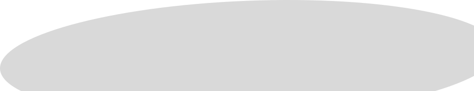
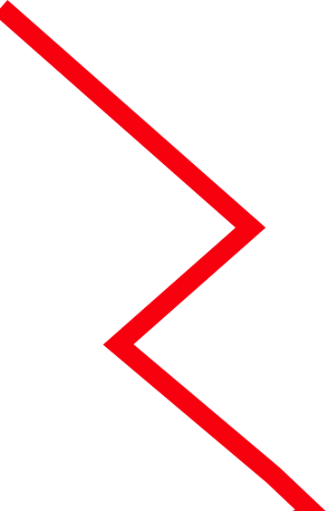
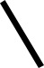
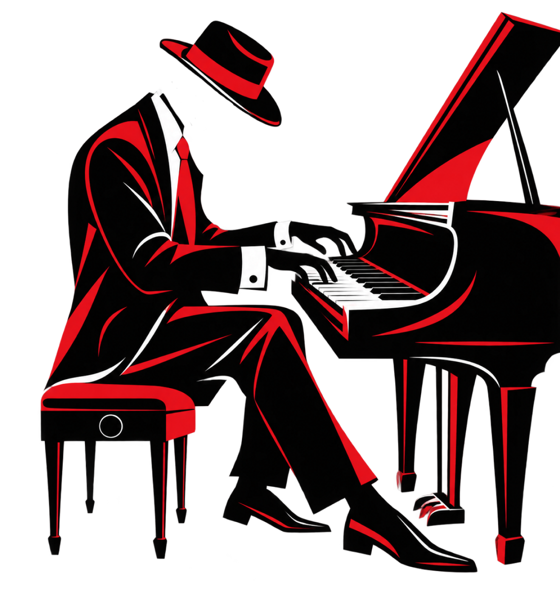
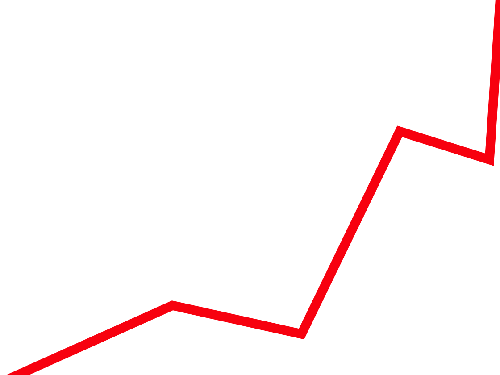
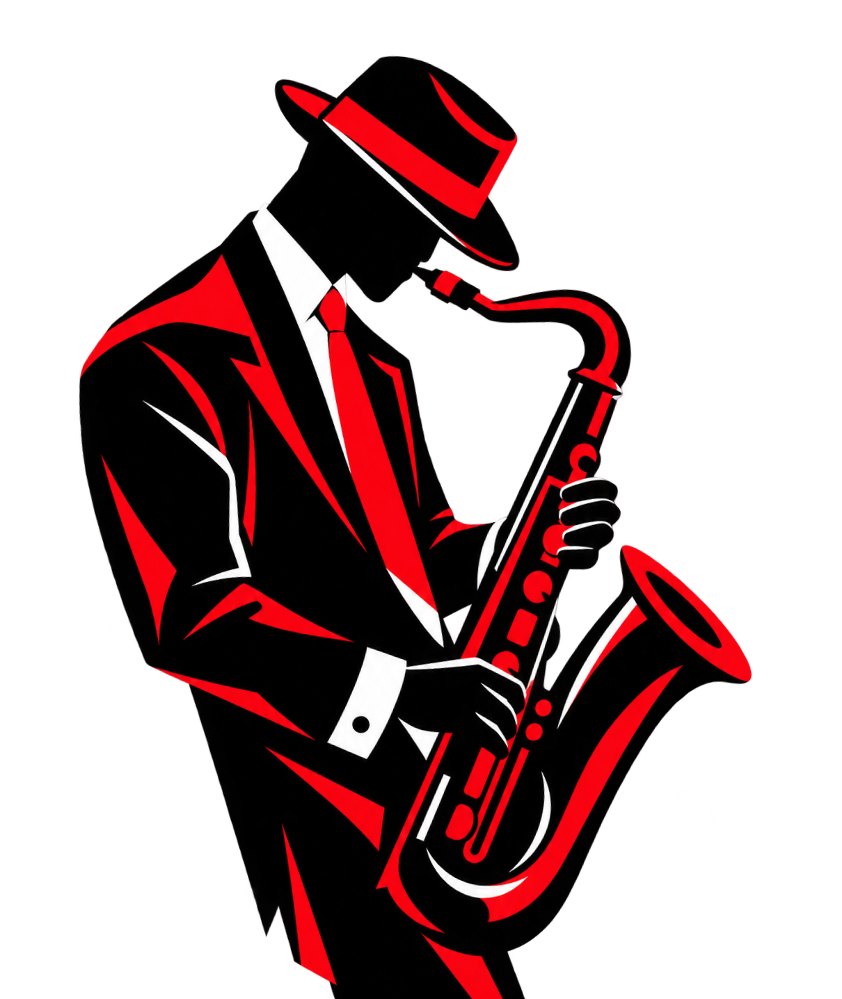
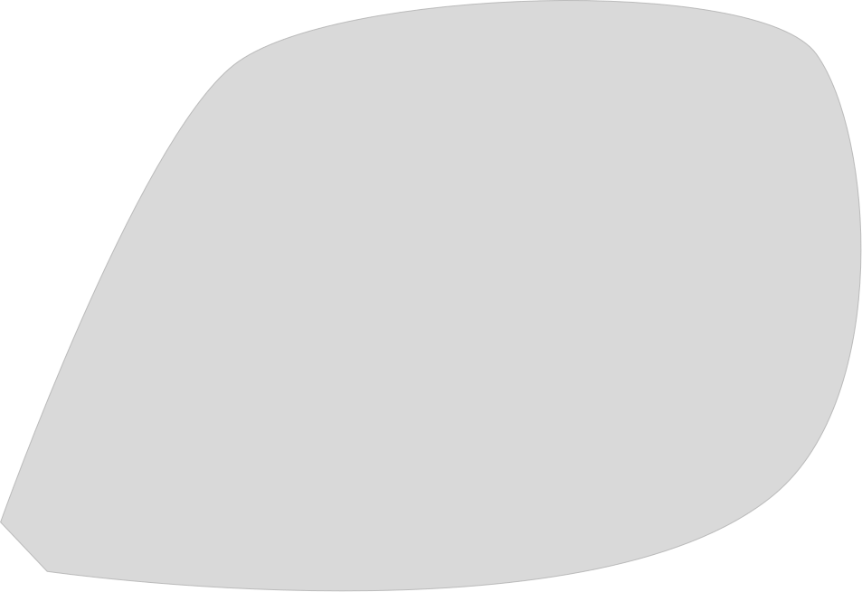
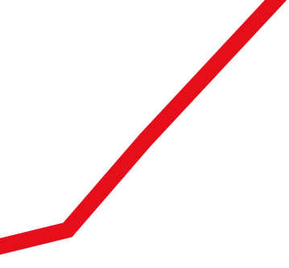
Fairwall Sans — современный шрифт без
засечек, созданный дизайнером Павлом
Бруевым (Pavel Bruev) и опубликованный
в 2021 году. Он сочетает геометрические
формы и плавные линии, благодаря чему
выглядит лаконично и выразительно.
Шрифт подходит для заголовков,
плакатов, айдентики, веб-дизайна
и различных графических композиций.
Его характер позволяет создавать
как строгие минималистичные решения,
так и смелые экспериментальные
работы.
Аа
одно начертание
Regular
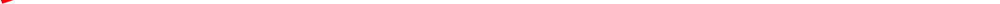
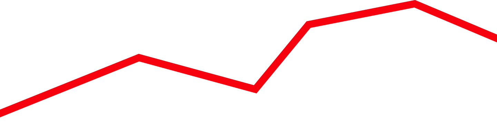
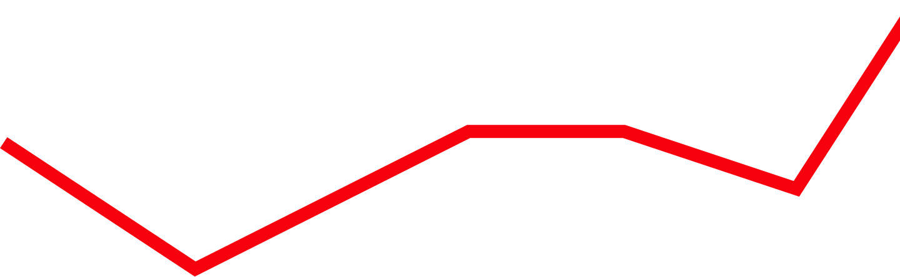
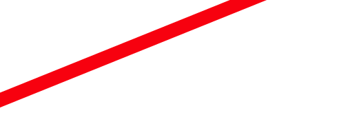
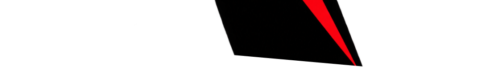
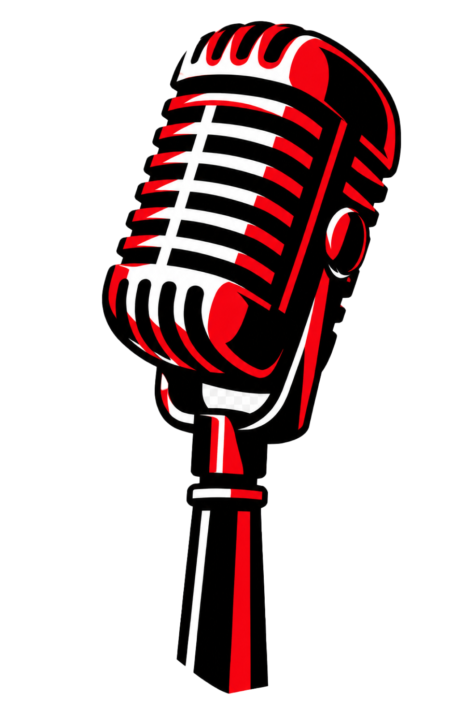
+
#
~
%
€
)
?
^
<
*
@
$
]
{
_
=
[
/
№
.
!
&
}
(
>
R
Контраст между прямолинейными
элементами и мягкими изгибами
делает типографику визуально
интереснее.
Формы букв построены
на сочетании прямых линий,
окружностей и плавных дуг.
Это придаёт шрифту
структурность и визуальную
цельность.
Толщина и форма линий определяют
визуальную выразительность букв
и их взаимодействие друг с другом.
Буквы не имеют
дополнительных выступов
на концах штрихов, поэтому
шрифт выглядит современно
и лаконично.
В Fairwall Sans геометрическая структура объединяется с элементами
традиционных гротесков, благодаря чему он выглядит одновременно
сдержанно и оригинально.
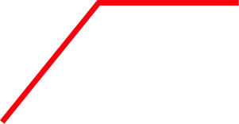
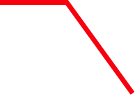
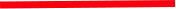
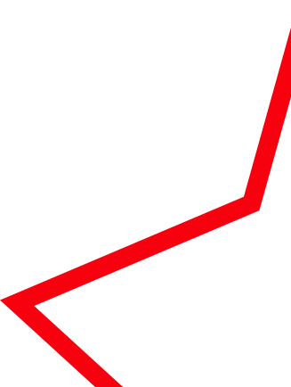
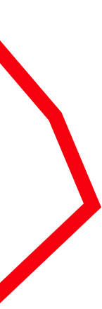
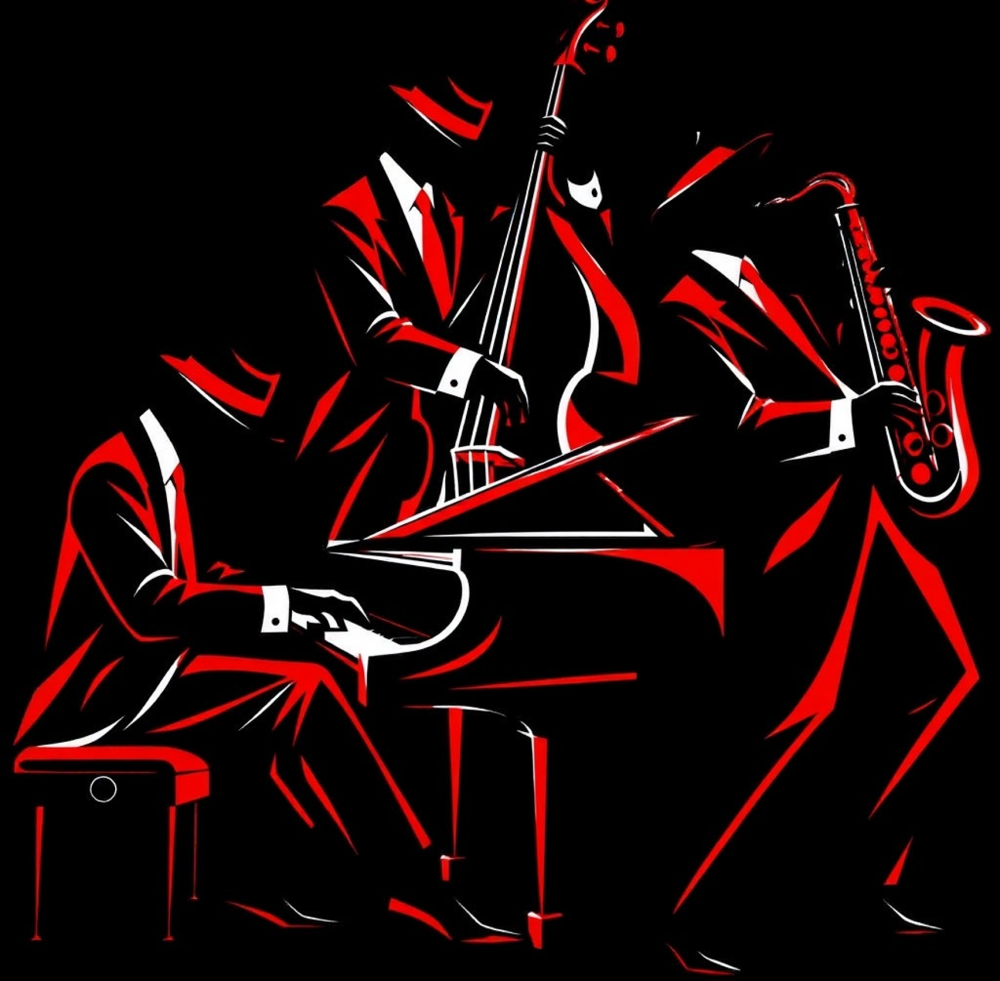
русский
english
Shqiptare
Português
español
Svensk
français
Deutsch
Zulu
italiano
norsk
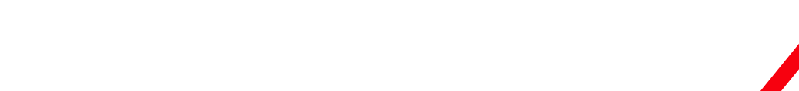
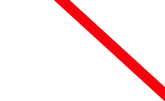
